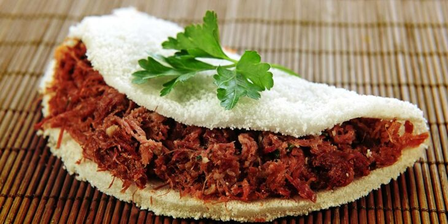

COMER EM RECIFE
TAPIOCA DE CARNE SECA
Saiu nesta sexta (22) a programação gratuita do Réveillon descentralizado do Recife.
 A tapioca ingrediente é a farinha obtida a partir do amido da mandioca, geralmente granulada e conhecida como goma de mandioca.
A tapioca quitute é um tipo de panqueca – recheada ou não – feita com a goma de mandioca.
Hoje em dia a tapioca é vendida em bares, restaurantes e não somente nas barraquinhas de rua. Todo mundo faz tapioca. Tem até tapioca gourmet, tapioca pizza, sorvete de tapioca, pudim de tapioca…enfim, a nossa criatividade não tem limites.
______
Veja o que abre e o que fecha no período de Natal no Recife
Prefeitura, comércio de bairros e shoppings têm horários especiais.
A tapioca ingrediente é a farinha obtida a partir do amido da mandioca, geralmente granulada e conhecida como goma de mandioca.
A tapioca quitute é um tipo de panqueca – recheada ou não – feita com a goma de mandioca.
Hoje em dia a tapioca é vendida em bares, restaurantes e não somente nas barraquinhas de rua. Todo mundo faz tapioca. Tem até tapioca gourmet, tapioca pizza, sorvete de tapioca, pudim de tapioca…enfim, a nossa criatividade não tem limites.